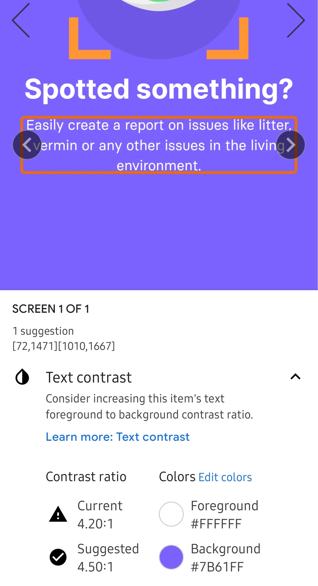
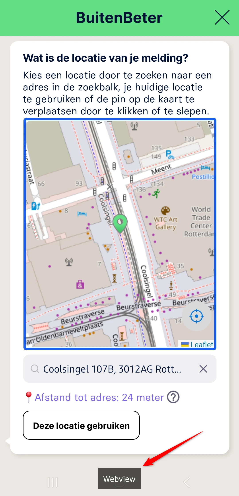
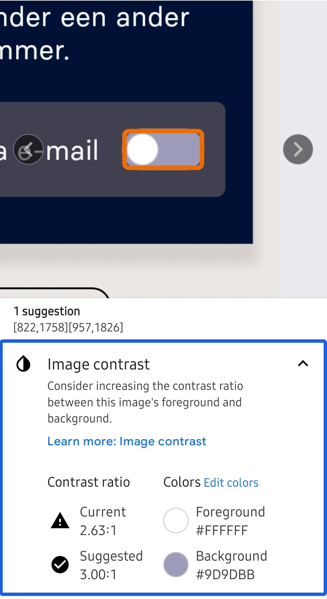

Audit digitale toegankelijkheid van de BuitenBeter Android-app
Samenvatting
Wij hebben de BuitenBeter Android-app onderzocht tussen 14 en 28 mei 2026. Op dit moment is een deel van de succescriteria als voldoende beoordeeld. In dit rapport lees je welke punten nog verbetering behoeven en hoe deze kunnen worden aangepakt.
Alle schermen van de BuitenBeter Android-app uit de steekproef
Buiten scope:
Web views (inhoud die binnen de app via een browser-component wordt getoond)
Ontoegankelijkheden die ontstaan door de manier waarop het device de app rendert, bijvoorbeeld kleurcontrast in alerts of de weergave van sommige knoppen
Inhoud afkomstig van derden
Basisniveau toegankelijkheidsondersteuning
Samsung Galaxy S25 (Android-versie 16)
TalkBack schermlezer
Extern toetsenbord
Technologieën van de app
Android (native)
TalkBack
Voortgang opgeloste bevindingen
Samenwerken met je team
Exporteer alle bevindingen als CSV-bestand. Je kunt het in een (online) spreadsheet inladen om met je team samen te werken.
Importeer in Jira
Exporteer alle bevindingen als Jira-compatibel CSV-bestand. Je kunt het direct importeren via Jira > Issues > Import issues from CSV.
Zelf bijhouden in de browser
Houd per bevinding bij of het is opgelost. Je voortgang wordt opgeslagen in jouw browser. Niemand anders kan je resultaat zien.
0 van
0 opgelost
TalkBack aanzetten en gebruiken (Android)
Om de bevindingen in dit rapport zelf te ervaren, test je de app met TalkBack — de schermlezer die standaard op iedere Android-telefoon en -tablet zit. Blinde en slechtziende gebruikers bedienen hun toestel hiermee. Hieronder vind je de stappen om TalkBack aan te zetten en de gebaren die je nodig hebt.
Let op: twee gebarensets. TalkBack kent twee varianten van sommige gebaren. De multi-finger-gebaren (met twee, drie of vier vingers) werken alleen op Android 11 of nieuwer én op Pixel 3 en nieuwer, Samsung Galaxy en een aantal andere toestellen. Op oudere of niet-ondersteunde toestellen gebruik je de L-vorm-alternatieven met één vinger. We noemen hieronder waar het verschil uitmaakt. Wil je weten welke set jouw toestel ondersteunt? Zet TalkBack aan en doe een three-finger tap — TalkBack vertelt je of multi-finger-gebaren actief zijn.
Tip. Oefen eerst een paar minuten in de Practice gestures-modus (op toestellen met multi-finger-ondersteuning: four-finger tap; anders via het TalkBack-menu → Help & feedback). Je kunt daar elk gebaar uitproberen zonder dat de app reageert. TalkBack vertelt je telkens welk gebaar je zojuist hebt gemaakt.
TalkBack aan- en uitzetten
De snelste manier is de volumeknop-sneltoets. Ga naar Instellingen → Toegankelijkheid → TalkBack → TalkBack-sneltoets en schakel deze in. Vanaf dat moment zet je TalkBack aan of uit door de volume-omhoog- en volume-omlaag-toets een paar seconden tegelijk ingedrukt te houden.
Alternatieven:
Instellingen → Toegankelijkheid → TalkBack → schakelaar aan of uit.
Vraag Google Assistant: "Hey Google, zet TalkBack aan" of "… uit".
De belangrijkste gebaren
Zodra TalkBack aan staat, werkt je toestel anders dan je gewend bent. Eén keer tikken selecteert alleen een element — je moet double-tappen om iets te activeren. Dit zijn de gebaren die je nodig hebt om door een scherm te bewegen:
Gebaar
Wat het doet
Veeg met één vinger naar rechts
Spring naar het volgende element.
Veeg met één vinger naar links
Spring naar het vorige element.
Sleep één vinger over het scherm
Explore by touch — TalkBack leest elk element voor dat je vinger raakt. Handig als je niet weet waar iets op het scherm staat.
Double-tap met één vinger
Activeer het element dat TalkBack heeft geselecteerd (link openen, knop indrukken, vinkje zetten). Je hoeft niet precies op het element te tikken.
Double-tap en vasthouden met één vinger
Lang indrukken (voor context-menu's en dergelijke).
Tik met twee vingers
Pauzeer of hervat de spraak. Handig als je iets wilt opschrijven.
Veeg met twee vingers omhoog, omlaag, links of rechts
Scroll door het scherm.
Het TalkBack-menu openen
Het TalkBack-menu is een ingebouwd menu met commando's als Lees vanaf boven, Zoek op scherm, navigatie-instellingen en hulp. Je opent het op twee manieren:
L-vorm (werkt altijd): veeg in één vloeiende beweging omlaag en dan naar rechts, of omhoog en dan naar rechts.
In dat menu vind je onder andere Read from top (lees het hele scherm vanaf het begin voor — essentieel om de leesvolgorde te controleren) en Read from next item (lees door vanaf het huidige element).
Reading controls: springen per type element
De reading controls zijn het equivalent van de VoiceOver Rotor op iOS. Je kiest eerst op welk type element je wilt springen — bijvoorbeeld alleen de koppen, alleen de links, of alleen de formuliervelden — en beweegt vervolgens van element naar element.
Wissel tussen reading controls: veeg in één L-vorm omhoog en dan omlaag, of omlaag en dan omhoog. Op multi-finger-toestellen: three-finger swipe omhoog of omlaag. Herhaal het gebaar om door de beschikbare reading controls te bladeren. TalkBack vertelt welke instelling actief is ("Koppen", "Links", "Bedieningselementen", …).
Volgend element van dat type: veeg met één vinger omlaag.
Vorig element van dat type: veeg met één vinger omhoog.
Welke reading controls beschikbaar zijn, stel je in via TalkBack-instellingen → Menu's aanpassen → Reading controls aanpassen. Sommige opties staan standaard uit.
Systeemnavigatie met TalkBack
Als TalkBack aan staat, werken ook een aantal toestel-acties met gebaren:
Terug: veeg omlaag en dan naar links.
Beginscherm: veeg omhoog en dan naar links.
Recente apps: veeg naar links en dan omhoog.
Meldingen openen: veeg naar rechts en dan omlaag, of met twee vingers omlaag vanaf de bovenkant.
Bevindingen reproduceren
In dit rapport staat bij elke bevinding een "Hoe te reproduceren"-sectie. Daar leggen we uit welke stappen en welke gebaren je moet gebruiken om het probleem zelf te zien. Gebruik deze instructie als naslag: als een stap verwijst naar "de volgende kop", dan weet je dat je de reading controls op Koppen moet zetten en met één vinger omlaag veegt.
Kom je er niet uit? Stuur ons gerust een mail op info@properaccess.nl — we denken graag mee.
Op veel schermen is de focus-indicator van verschillende elementen alleen te onderscheiden aan een subtiele kleurverandering van de achtergrond. Het contrast tussen de gefocuste en niet-gefocuste staat — of tussen de focusrand en de achtergrond — is lager dan 3:1, waardoor mensen met een verminderde kleurwaarneming niet kunnen zien waar de focus staat. Zie bijvoorbeeld de opties in de header, de opties in het menu, de knop "Gemeente aanpassen" op het Home-scherm, alle opties in de verschillende stappen van het aanmaken van een melding en andere elementen op andere schermen.
User story
Ik gebruik de app met een extern toetsenbord vanwege een motorische beperking. Wanneer ik met het toetsenbord door de app navigeer, verschilt de toetsenbordfocus zo weinig van de niet-gefocuste staat dat ik niet kan zien welk element nu geselecteerd is. Ik verwacht dat de focus-indicator duidelijk afsteekt tegen de achtergrond.
Oplossing
Geef de focus-indicator minimaal 3:1 contrast ten opzichte van zowel het gefocuste element als de omringende achtergrond. Vertrouw niet alleen op een subtiele kleurverschuiving — combineer kleur met een tweede signaal, zoals een zichtbare rand, een onderstreping, een dikkere rand of een gevulde achtergrond. Controleer dat elke focus-staat (default, geselecteerd, disabled) aan de verhouding voldoet, in zowel light- als dark mode.
Wanneer er met het toetsenbord door de app wordt genavigeerd, is de toetsenbordfocus op sommige elementen niet zichtbaar. Zie de volgende elementen op het Home-scherm (Nieuwe melding), al is dit geen uitputtende lijst:
de knop met een pijl onder "Waar gaat je melding over?"
de x-knoppen in verschillende zoekvelden
de ?-knop naast het geselecteerde adres onder "Wat is de locatie van je melding?"
User story
Ik heb een motorische beperking en navigeer door de app met een extern toetsenbord in plaats van met aanraakgebaren. Bij sommige interactieve elementen is de toetsenbordfocus niet zichtbaar, waardoor ik moeilijk kan bepalen welk element actief is en het risico groter wordt dat ik per ongeluk het verkeerde element activeer.
Oplossing
Zorg dat elk focusbaar element een duidelijk zichtbare focus-indicator toont. Gebruik op Android de standaard focus-highlight, of pas een custom stateListAnimator of foreground drawable toe die reageert op de gefocuste staat. De indicator moet minimaal 3:1 contrast hebben ten opzichte van zowel het element als de achtergrond eromheen.
De introductie van de app bestaat uit een carrousel van 5 slides. Op een aantal daarvan is het contrast onvoldoende.
Op slide 1 van de introductie is de tekst "Samen houden we de leefomgeving .." donkergroen (#3A5F5E) op een groene achtergrond (#62DF85), contrast 4,2:1. Hetzelfde probleem staat op slide 5.
Op slide 2 van de introductie is de tekst "Sla introductie over" zwart (#011237) op een paarse (#7B61FF) achtergrond. De witte tekst "Maak snel en eenvoudig .." heeft ook onvoldoende contrast op de paarse achtergrond: 4,2:1. Het slidenummer "2 / 5" is zwart (#0E1A4B) op de paarse achtergrond, contrast 3,9:1.

Op slide 3 van de introductie is de tekst "Sla introductie over" zwart (#011237) op een bruine (#B25F24) achtergrond. De verhouding is 4:1. Het slidenummer "3 / 5" is zwart (#131A35) op dezelfde bruine achtergrond, contrast 3,7:1.
Zorg dat normale tekst een contrast van minimaal 4,5:1 heeft, en grote tekst (18pt en groter, of 14pt vetgedrukt en groter) minimaal 3:1.
User story
Ik heb een visuele beperking. Wanneer ik tekst lees die nauwelijks afsteekt tegen de achtergrond, kan ik de woorden niet onderscheiden. Ik verwacht dat tekst altijd duidelijk leesbaar is tegen de achtergrond.
Oplossing
Pas de tekstkleur, de achtergrond, of beide aan zodat het contrast aan het minimum voldoet. Controleer het resultaat met een contrastchecker en verifieer voor elke staat waarin de tekst voorkomt (default, disabled, over afbeeldingen, op gekleurde achtergronden) en voor zowel light- als dark mode.
De introductie bevat een carrousel van 5 slides met pijlknoppen voor de navigatie. Op sommige slides hebben de pijlen onvoldoende contrast tegen de achtergrond. Zie bijvoorbeeld slide 3, waar de zwarte (#313143) pijl op de bruine (#B25F24) achtergrond een contrast van 2,8:1 heeft. Ook de andere slides moeten gecontroleerd worden. Interface-elementen en betekenisvolle grafische elementen moeten minimaal 3:1 contrast hebben, zodat slechtziende bezoekers ze kunnen herkennen en lokaliseren.
User story
Ik gebruik de app met slechtziendheid. De navigatiepijlen van de slider hebben te weinig contrast tegen de achtergrond, waardoor ze moeilijk te zien en te gebruiken zijn. Ik verwacht dat interactieve elementen voldoende contrast hebben zodat ze duidelijk zichtbaar blijven.
Oplossing
Pas de kleur van de navigatiepijlen of hun achtergrond aan zodat het contrast tussen de pijlen en de omringende achtergrond minimaal 3:1 is.
Op dit scherm staat een vraag om een gemeente te selecteren. De tekst "Mijn huidige locatie" is paars (#7B61FF) op een witte achtergrond. Het contrast is 4,2:1.
User story
Ik heb een visuele beperking of gebruik de app in fel zonlicht. Sommige tekst heeft te weinig contrast tegen de achtergrond, waardoor die moeilijk te lezen is. Ik verwacht dat tekst onder alle omstandigheden goed leesbaar blijft.
Oplossing
Pas de tekstkleur of achtergrondkleur aan zodat het contrast minimaal 4,5:1 is en de leesbaarheid verbetert.
Op dit scherm verschijnt na het tikken in het veld "Zoek een gemeente" en het typen van iets een x-knop naast het zoekveld. Deze knop wist de zoekterm, maar heeft geen toegankelijke naam. Gebruikers van hulpsoftware kunnen niet begrijpen wat de functie ervan is. Een toegankelijke naam mag nooit leeg zijn, want zonder naam weet een blinde bezoeker niet wat de knop doet. Hetzelfde probleem met de x-knop komt voor in andere zoekvelden, bijvoorbeeld in "Zoek categorie".
User story
Als gebruiker van een schermlezer of spraakbediening heb ik bij elk element een naam nodig die ik kan horen of uitspreken — want zonder naam kondigt de schermlezer alleen de rol ("knop") aan zonder context, heeft spraakbediening geen woord waarmee ik het kan activeren, en kan ik niet met het element werken.
Oplossing
Geef de knop een duidelijke toegankelijke naam, bijvoorbeeld "Verwijderen".
Op dit scherm doet een placeholdertekst dienst als label voor het invoerveld. De placeholdertekst verdwijnt zodra de gebruiker begint te typen, waardoor de functie van het invoerveld onduidelijk wordt voor een gebruiker die afhankelijk is van een schermlezer. Een placeholder kan daarom niet als label dienen. Zorg dat het label altijd zichtbaar blijft.
User story
Ik gebruik de app met een schermlezer. Wanneer de placeholdertekst verdwijnt zodra ik begin te typen, weet ik niet meer waar het invoerveld voor bedoeld is. Ik verwacht dat het label van het veld altijd beschikbaar blijft.
Oplossing
Voeg een permanent zichtbaar label toe naast of boven het invoerveld. De placeholdertekst mag als aanvullende hint blijven staan, maar mag niet het enige label zijn. Zorg er ook voor dat de toegankelijke naam de zichtbare tekst van het veld bevat.
#8 - Statuswijziging wordt niet doorgegeven aan hulpsoftware
Op dit scherm opent na het tikken in het veld "Zoek een onderwerp" een modal. Die bevat accordeon-secties die uit- en ingeklapt kunnen worden. De visuele pijl-indicator verandert afhankelijk van de staat van de accordeon, maar deze staat wordt niet aangekondigd aan schermlezergebruikers. Daardoor begrijpen gebruikers van hulpsoftware mogelijk niet of een sectie uitgeklapt of ingeklapt is.
User story
Ik gebruik de app met een schermlezer. Wanneer ik op een accordeon focus, kan ik niet bepalen of de sectie uitgeklapt of ingeklapt is, omdat de status niet wordt aangekondigd. Ik verwacht dat de huidige status van de accordeon programmatisch wordt doorgegeven.
Oplossing
Zorg dat accordeon-elementen hun uitgeklapt- en ingeklapt-staat programmatisch doorgeven, zodat schermlezers de huidige status aan gebruikers kunnen aankondigen.
#9 - Kaart heeft geen betekenisvol tekstalternatief
Impact: GrootType: ContentWCAG: 1.1.1EN: 11.1.1.1

Op dit scherm wordt onder de vraag "Wat is de locatie van je melding?" de "Leaflet"-kaart getoond om informatie over te brengen — de locatie van de melding. Het tekstalternatief is echter alleen "webview". Die tekst beschrijft niet het doel of de functie van de kaart, waardoor die onduidelijk is voor schermlezergebruikers.
User story
Ik lees de app met een schermlezer. Wanneer ik op het kaart-element focus, hoor ik alleen "WebView" en begrijp ik niet dat het een interactieve kaart is om een adres te selecteren. Ik verwacht dat informatieve elementen een beschrijvend tekstalternatief hebben.
Oplossing
Haal de kaart uit de accessibility-tree, aangezien er onder de kaart al een alternatief is om het adres te selecteren (android:importantForAccessibility="no"). Of, als de focus op de kaart moet blijven, geef die dan een beschrijvend toegankelijk label via contentDescription dat duidelijk maakt wat de kaart toont (bijvoorbeeld "Kaart voor het selecteren van een adres").
Op dit scherm staat onder de vraag "Wat is de locatie van je melding?" een kaart. Wanneer er een adres is geselecteerd, wordt er een locatiemarkering op de kaart getoond. De kaartcomponent zelf is uitgezonderd van bepaalde toegankelijkheidseisen. Het custom locatie-icoon heeft echter onvoldoende contrast tegen de wisselende kaartachtergrond (op sommige plekken 1,4:1), waardoor het voor sommige gebruikers moeilijk waarneembaar is.
User story
Ik heb een visuele beperking. Het locatie-icoon heeft weinig contrast tegen de achtergrond, waardoor ik de positie ervan moeilijk kan bepalen. Ik verwacht dat belangrijke interface-elementen duidelijk zichtbaar blijven.
Oplossing
Gebruik een contrastrijkere kleur, omlijning of rand voor het custom locatie-icoon om de zichtbaarheid tegen de kaartachtergrond te verbeteren.
Op dit scherm staat onder de vraag "Wat is de locatie van je melding?" naast de tekst "Afstand tot adres: 24 meter" een ?-knop die een "Let op!"-modal opent met extra informatie over het selecteren van een adres. De toegankelijke naam van de knop is "Verwijder de tekst", wat de functie niet correct beschrijft. Daardoor is het voor blinde bezoekers en schermlezergebruikers moeilijk om het doel van de knop te begrijpen. De toegankelijke naam moet kort en helder de functie van de knop overbrengen. Bovendien staat er op dit scherm nog een knop (de x-knop in het zoekveld) met dezelfde naam, wat voor extra verwarring kan zorgen bij gebruikers van hulpsoftware.
User story
Ik gebruik de app met een schermlezer. Wanneer ik een knop tegenkom, hoor ik een naam die mij niet vertelt wat de knop doet. Ik verwacht dat elke knop een duidelijke naam heeft die de actie beschrijft.
Oplossing
Geef de knop een beschrijvende toegankelijke naam die de functie en context duidelijk overbrengt, bijvoorbeeld "Meer informatie over het adres".
Op dit scherm zijn meerdere teksten die visueel als kop functioneren niet als kop gemarkeerd. Wanneer een kop niet correct is gemarkeerd, verliest die zijn semantische betekenis en wordt die ontoegankelijk voor bezoekers die afhankelijk zijn van hulpsoftware zoals schermlezers. Koppen zijn essentieel om de inhoudsstructuur te navigeren en te begrijpen. Zie de volgende koppen:
"Selecteer een item om door te gaan" in een modal die verschijnt na het tikken op "Ja" bij de vraag "Wil je een afbeelding toevoegen aan je melding?"
"Let op!" in een modal die verschijnt na het tikken op de ?-knop onder de vraag "Wat is de locatie van je melding?".
User story
Als bezoeker die een schermlezer gebruikt, gebruik ik reading controls om van kop naar kop te springen, zodat ik niet door elk afzonderlijk element hoef te swipen — want wanneer visuele koppen niet als echte kop zijn gemarkeerd, moet ik regel voor regel door het hele scherm swipen om te vinden wat ik zoek.
Oplossing
Zorg dat deze teksten de juiste kop-semantiek krijgen die hun rol en hiërarchie in de inhoud weergeeft. Stel op Android android:accessibilityHeading="true" in (API 28+) of roep ViewCompat.setAccessibilityHeading(view, true) aan.
#13 - Dialoogvenster heeft geen toegankelijke rol en naam
Onder de vraag "Wil je een afbeelding toevoegen aan je melding?" zijn er twee opties om te selecteren. Wanneer de gebruiker "Ja" kiest, verschijnt er een modaal dialoogvenster "Selecteer een item om door te gaan". Dit dialoogvenster wordt niet correct doorgegeven aan hulpsoftware. TalkBack kondigt het element niet als dialoogvenster aan en er is geen toegankelijke naam, waardoor het voor gebruikers moeilijk is om te begrijpen dat er een nieuwe context is geopend. Hetzelfde probleem speelt bij het "Taal"-dialoogvenster op Menu - Instellingen en bij andere dialoogvensters.
User story
Ik gebruik de app met TalkBack. Wanneer het dialoogvenster opent, kondigt mijn schermlezer dit niet aan en beschrijft het de inhoud niet. Ik verwacht dat mijn schermlezer mij vertelt dat er een dialoogvenster is geopend en wat erin staat.
Oplossing
Zorg dat het dialoogvenster correct wordt doorgegeven aan hulpsoftware door een dialog-component te gebruiken en een beschrijvende toegankelijke titel mee te geven (bijvoorbeeld met android:accessibilityPaneTitle of paneTitle in Compose), zodat TalkBack de context en het doel van de modal kan aankondigen.
#14 - Instructiebericht is afgekapt en niet volledig zichtbaar voor gebruikers
Wanneer een gebruiker omhoog probeert te scrollen of teruggaat naar eerdere stappen van het aanmaken van een melding, verschijnt een bericht dat begint met "Let op! Het is niet mogelijk…". Dit is een belangrijk instructiebericht, maar het is afgekapt met een beletselteken en kan niet worden uitgeklapt of volledig worden bekeken. Daardoor missen ziende gebruikers mogelijk belangrijke informatie over hoe het formulier zich gedraagt en welke velden niet meer gewijzigd kunnen worden.
User story
Ik gebruik de app om een formulier in te vullen. Belangrijke instructietekst wordt afgekapt en is niet volledig te lezen, waardoor ik moeilijk begrijp hoe het formulier zich gedraagt en welke velden ik niet meer kan wijzigen.
Oplossing
Zorg dat instructieberichten volledig getoond kunnen worden, bijvoorbeeld door de tekst over meerdere regels te laten lopen, de berichtcontainer te vergroten, of een manier te bieden om het bericht uit te klappen en de volledige tekst te bekijken.
Wanneer een gebruiker omhoog probeert te scrollen of teruggaat naar eerdere stappen van het aanmaken van een melding, verschijnt een bericht dat begint met "Let op! Het is niet mogelijk…". Dit belangrijke instructiebericht verschijnt kort en verdwijnt daarna weer. Die korte duur is voor sommige gebruikers misschien niet genoeg tijd om de instructie te lezen en te begrijpen.
User story
Ik lees langzamer door een cognitieve beperking, slechtziendheid of dyslexie. Wanneer er een melding verschijnt, verdwijnt die voordat ik klaar ben met lezen. Ik verwacht dat instructie- en waarschuwingsberichten zichtbaar blijven totdat ik ze zelf wegklik.
Oplossing
Zorg dat tijdelijke instructieberichten lang genoeg zichtbaar blijven om comfortabel te lezen, of bied een manier om het bericht te pauzeren, weg te klikken of opnieuw te openen nadat het is verdwenen.
Op dit scherm voldoen de grijze (#6B6B77) teksten "Naam", "E-mailadres" en "Telefoonnummer" niet aan het minimale contrast tegen de lichtbeige (#ECE7E2) achtergrond — het is namelijk 4,3:1. Normale tekst (kleiner dan 18pt, of kleiner dan 14pt vetgedrukt) vereist een contrast van minimaal 4,5:1 voor de leesbaarheid. Onvoldoende contrast maakt tekst moeilijk of onmogelijk te lezen voor mensen met slechtziendheid, kleurwaarnemingsproblemen of bij gebruik in een felle omgeving. Hetzelfde probleem speelt bij de teksten "Berichten" en "Taal" op het scherm Menu - Instellingen.
User story
Ik heb een visuele beperking. Wanneer ik een scherm lees, kan ik tekst met weinig contrast tegen de achtergrond niet onderscheiden. Ik verwacht dat tekst altijd duidelijk afsteekt tegen de achtergrond.
Oplossing
Pas de tekstkleur of achtergrondkleur aan zodat het contrast minimaal 4,5:1 is. Gebruik een contrastchecker om dit te verifiëren.
Op dit scherm hebben de invoervelden "Naam", "E-mailadres" en "Telefoonnummer" weinig contrast tegen de achtergrond. Het contrast tussen hun witte (#EFEFF1) randen en de lichtbeige (#ECE7E2) achtergrond is 1,1:1. Interface-elementen moeten minimaal 3:1 contrast hebben tegen achtergrondkleuren.
User story
Ik heb een visuele beperking. Wanneer ik een formulier invul, kan ik niet zien waar invoervelden beginnen of eindigen. Ik verwacht dat de randen van invoervelden duidelijk afsteken tegen de achtergrond.
Oplossing
Pas de kleur van de invoervelden of hun achtergrond aan zodat het contrast minimaal 3:1 is. Doe dit voor elke staat die informatie overbrengt (default, focused, selected, checked) en in zowel light- als dark mode. Controleer de verhouding met een contrastchecker.
#18 - Foutmeldingen worden niet als statusbericht aangekondigd
Op dit scherm verschijnen bij onjuist ingevulde formuliervelden visueel foutmeldingen op het scherm, maar die worden niet door TalkBack aangekondigd. Daardoor weten schermlezergebruikers mogelijk niet dat er een fout is opgetreden of begrijpen ze niet wat er gecorrigeerd moet worden.
User story
Ik gebruik de app met TalkBack. Wanneer een formulier fouten bevat, worden de foutmeldingen niet aangekondigd, waardoor ik mogelijk niet doorheb dat er iets mis is of welke velden ik moet corrigeren.
Oplossing
Zorg dat validatie-foutmeldingen programmatisch aan hulpsoftware worden doorgegeven en automatisch worden aangekondigd zodra ze verschijnen. Zorg er ook voor dat de bijbehorende formuliervelden hun ongeldige staat doorgeven en correct gekoppeld zijn aan de bijbehorende foutmeldingen.
#19 - Extern toetsenbord kan sommige elementen niet bereiken of bedienen
Op dit scherm, in de verschillende stappen van het aanmaken van een melding, kunnen bepaalde elementen niet met Tab/Shift+Tab worden bereikt, niet met Space/Enter worden geactiveerd, of anderszins niet met een extern toetsenbord worden bediend. Gebruikers die geen touch kunnen gebruiken — omdat ze afhankelijk zijn van Switch Access (Android) of een extern toetsenbord — kunnen deze functie niet gebruiken. Zie de volgende elementen die niet met het toetsenbord bereikbaar zijn: de zoekresultaten van zoekvelden, bijvoorbeeld in "Zoek een gemeente" en "Zoek een onderwerp".
User story
Ik heb een motorische beperking en navigeer door de app met een extern toetsenbord in plaats van met aanraakgebaren. Wanneer ik door de app navigeer, zijn sommige elementen niet bereikbaar of bruikbaar met mijn toetsenbord. Ik verwacht dat ik elk deel van het scherm alleen met mijn toetsenbord kan bedienen.
Oplossing
Zorg dat elk interactief element toetsenbord-focusbaar en toetsenbord-bedienbaar is. Stel op Android android:focusable="true" en waar nodig android:focusableInTouchMode="true" in, en handel KeyEvent.KEYCODE_ENTER / KEYCODE_DPAD_CENTER af. Test elk scherm met een aangesloten extern toetsenbord en zonder touch.
Op dit scherm zijn de toggle-schakelaars "App notificaties" en "Berichten per email" groen (#63DF85) op een witte achtergrond wanneer ze aan staan. Het contrast is 1,7:1. Wanneer ze uit staan zijn ze grijs (#9D9CBB), met een contrast van 2,6:1. Beide waardes zijn onvoldoende, waardoor gebruikers met slechtziendheid of in fel zonlicht het element mogelijk niet kunnen waarnemen of herkennen. Een vergelijkbaar probleem speelt bij de toggle "Ontvang bevestiging via e-mail" nadat een melding is verstuurd.

User story
Ik gebruik de app in verschillende lichtomstandigheden, ook in fel zonlicht. De toggle-schakelaars hebben te weinig contrast in zowel de aan- als de uit-staat, waardoor ik moeilijk kan zien in welke staat ze staan. Ik verwacht dat interface-elementen in alle staten duidelijk zichtbaar en te onderscheiden blijven.
Oplossing
Gebruik een donkerdere kleur voor zowel de aan- als de uit-staat van de toggle, of pas de achtergrond aan, zodat het contrast tussen de toggle en de achtergrond minimaal 3:1 is.
Op dit scherm zijn teksten die visueel als kop functioneren niet als kop gemarkeerd. Zonder correcte kop-markering kunnen schermlezergebruikers moeite hebben om de inhoudsstructuur van het scherm te begrijpen en te navigeren. Zie bijvoorbeeld de koppen "Welke gegevens verwerken wij?", "Waarom verzamelen we deze informatie?" en andere.
User story
Als bezoeker die een schermlezer gebruikt, gebruik ik reading controls om van kop naar kop te springen, zodat ik niet door elk afzonderlijk element hoef te swipen — want wanneer visuele koppen niet als echte kop zijn gemarkeerd, moet ik regel voor regel door het hele scherm swipen om te vinden wat ik zoek.
Oplossing
Zorg dat deze teksten de juiste kop-semantiek krijgen die hun rol en hiërarchie weergeeft. Stel op Android android:accessibilityHeading="true" in (API 28+) of roep ViewCompat.setAccessibilityHeading(view, true) aan.
#22 - Items zijn visueel een lijst maar niet als lijst gemarkeerd
Op dit scherm staat onder de kop "Welke gegevens verwerken wij?" visueel een lijst van 4 items. De items worden echter niet als lijst aan hulpsoftware doorgegeven. Schermlezergebruikers horen daardoor niet dat de items bij elkaar horen, hoeveel items er zijn, of op welk item ze zich bevinden.
User story
Ik gebruik de app met een schermlezer. Wanneer ik een groep bij elkaar horende items tegenkom, hoor ik niet dat ze bij een lijst horen of hoeveel items de lijst bevat, omdat de lijst niet programmatisch is gedefinieerd. Ik verwacht dat mijn schermlezer de lijst aankondigt en aangeeft hoeveel items die bevat.
Oplossing
Groepeer de lijst-items met de juiste lijst-semantiek. Gebruik op Android een RecyclerView, of stel AccessibilityNodeInfoCompat.setCollectionInfo(...) in op het bovenliggende element en setCollectionItemInfo(...) op elk item, zodat TalkBack het aantal items en de positie aankondigt.
Op dit scherm, op het tabblad "Mijn meldingen", staan meerdere meldingen. Deze zijn niet alleen met het toetsenbord bereikbaar. Gebruikers die geen touch kunnen gebruiken — omdat ze afhankelijk zijn van Switch Access (Android) of een extern toetsenbord — kunnen deze functie niet gebruiken.
User story
Ik heb een motorische beperking en navigeer door de app met een extern toetsenbord in plaats van met aanraakgebaren. Wanneer ik door de app navigeer, zijn sommige elementen niet bereikbaar of bruikbaar met mijn toetsenbord. Ik verwacht dat ik elk deel van het scherm alleen met mijn toetsenbord kan bedienen.
Oplossing
Zorg dat elk interactief element toetsenbord-focusbaar en toetsenbord-bedienbaar is.
Op dit scherm is de kop ("Afval" of "Object") niet als kop gemarkeerd. Zorg dat hulpsoftware koppen als kop herkent.
User story
Als bezoeker die een schermlezer gebruikt, gebruik ik reading controls om van kop naar kop te springen, zodat ik niet door elk afzonderlijk element hoef te swipen — want wanneer visuele koppen niet als echte kop zijn gemarkeerd, moet ik regel voor regel door het hele scherm swipen om te vinden wat ik zoek.
Oplossing
Zorg dat deze teksten de juiste kop-semantiek krijgen die hun rol en hiërarchie in de inhoud weergeeft. Stel op Android android:accessibilityHeading="true" in (API 28+) of roep ViewCompat.setAccessibilityHeading(view, true) aan.
#25 - Zichtbare tekst ontbreekt in de toegankelijke naam van de knop
Op dit scherm staat in de header een knop met de zichtbare tekst "Mijn meldingen", maar de toegankelijke naam ervan is "Ga terug naar het vorige scherm". Dit verschil kan problemen veroorzaken voor gebruikers die met spraakbediening werken. Spraakcommando's zijn gebaseerd op de zichtbare tekst van elementen. Als de toegankelijke naam daar sterk van afwijkt, werken de spraakcommando's niet.
User story
Ik gebruik de app met spraakbediening. Wanneer ik de zichtbare tekst van een knop hardop uitspreek, reageert de knop niet. Ik verwacht dat de knop activeert wanneer ik de tekst uitspreek die ik op het scherm zie.
Oplossing
Zorg dat de toegankelijke naam de zichtbare tekst bevat, bij voorkeur aan het begin. Idealiter is de toegankelijke naam identiek aan de zichtbare tekst.
Over dit onderzoek
Leeswijzer
Onze rapporten zijn anders. Bij het bespreken van de gevonden problemen volgen wij niet de structuur van de norm, maar die van jouw website of app. Hierdoor kun je gewoon per pagina of scherm aan de slag gaan. Wel zo makkelijk! Je vindt verderop een overzicht van alle pagina’s met problemen.
We geven je bij elk gevonden issue een paar voorbeelden, maar niet een complete lijst. Controleer zelf of het probleem ook nog op andere plekken voorkomt. Zie het rapport als een leidraad.
Gebruikte norm
Dit onderzoek laat zien in hoeverre de app op dit moment voldoet aan WCAG 2.1, niveau A en AA. WCAG staat voor Web Content Accessibility Guidelines. Dit is de internationale norm voor digitale toegankelijkheid. De Europese norm EN 301 549 bevat alle eisen van WCAG op niveau A en AA.
In dit rapport hebben we korte beschrijvingen van de succescriteria uit de norm opgenomen, met een algemene uitleg erbij. Wil je ze helemaal lezen? Bekijk dan de documentatie van WCAG.
Gebruikte onderzoeksmethode
We gebruiken de onderzoeksmethode WCAG-EM van het W3C. Het proces ziet er als volgt uit:
vaststellen wat binnen en buiten scope valt
vaststellen welke technologieën zijn gebruikt
steekproef (sample) samenstellen
steekproef onderzoeken
gevonden issues beschrijven
Het grootste deel van het onderzoek doen we met de hand. Voor een deel van de toegankelijkheidseisen gebruiken we automatische tools als ondersteuning, zoals axe-core en Chrome Developer Tools.
Belangrijk om te weten
Dit rapport helpt je om de toegankelijkheid van je app te verbeteren. Maar let op: het is geen definitieve, volledige lijst van alle aanwezige toegankelijkheidsproblemen. Dat zit zo:
Het is een steekproef
Ten eerste is het onderzoek gebaseerd op een steekproef. Die is op een betrouwbare manier genomen, en de meeste problemen zullen daardoor zeker aan het licht komen. Toch kan een probleem net buiten de steekproef vallen. Bij een volgend onderzoek kan het wel ontdekt worden.
Op basis van falsificatie
We beoordelen vanuit het principe van falsificatie. Dat houdt in dat we proberen te bewijzen dat iets niet waar is, in plaats van te bevestigen dat het klopt. ‘Voldoet’ betekent daarom dat we geen reden hebben gevonden om een punt af te keuren. Maar als we later wél een reden vinden, kan het alsnog worden afgekeurd.
Voortschrijdend inzicht
Het komt voor dat de beoordeling van een succescriterium op detailniveau verandert. De norm beschrijft namelijk niet élk mogelijk scenario. Samen met andere onderzoeksbureaus overleggen we hoe we met bepaalde situaties omgaan. Zo kan iets dat nu wordt afgekeurd, soms bij een volgend onderzoek worden goedgekeurd en andersom.
Oplossen leidt tot nieuw probleem
Ten slotte kan het gebeuren dat bij het oplossen van een probleem onbedoeld een nieuw toegankelijkheidsprobleem ontstaat. Dat komt dan bij een volgend onderzoek pas naar voren.
Hoe werkt dit rapport?
Bevindingen bekijken en filteren
Alle gevonden toegankelijkheidsproblemen staan onder Gevonden problemen. Je kunt de bevindingen filteren op:
Impact (Groot, Medium, Klein, Advies) — hoe ernstig is het probleem voor de gebruiker?
Type (Content, Techniek) — moet de inhoud of de techniek worden aangepast?
Status (Open, Opgelost) — welke problemen zijn al verholpen?
Voortgang bijhouden
Je kunt je voortgang op twee manieren bijhouden:
CSV-export — exporteer alle bevindingen als CSV-bestand en laad het in een (online) spreadsheet om met je team samen te werken.
Jira-export — exporteer alle bevindingen als Jira-compatibel CSV-bestand. Importeer het via Jira > Issues > Import issues from CSV. Bevindingen worden aangemaakt als bugs met prioriteit op basis van impact.
Registreer in de browser — activeer deze optie om per bevinding bij te houden of het is opgelost. Je voortgang wordt opgeslagen in je browser. Niemand anders kan je resultaat zien. Let op: de voortgang is gekoppeld aan je browser. Als je een andere browser of een ander apparaat gebruikt, begint de telling opnieuw.
Plan van aanpak — download een geprioriteerd plan van aanpak om de gevonden problemen stap voor stap op te lossen. Dit is beschikbaar bij audits vanaf maart 2026.
Link naar een specifieke bevinding delen
Bij elke bevinding verschijnt een link-icoon wanneer je er met de muis overheen gaat. Klik op dit icoon om de directe link naar die bevinding te kopiëren. Je kunt deze link plakken in een e-mail of chatbericht, bijvoorbeeld om een vraag te stellen aan Proper Access over een specifiek punt.